Design thinkingfor your college
Five stages. Every one done for real.
No lecture slides for days on end. Participants move through the full cycle on a real problem. Pick a stage to see what happens in the room.
See a workshop unfold.
This is the kind of brief participants work on. Step through it to see what they produce at each stage.
Shape it around your group.
Choose a format, the time you have and your group size. The agenda below builds itself from our actual syllabus. We fine-tune it with you on a call.
Your agenda
You get the founder, not an associate.
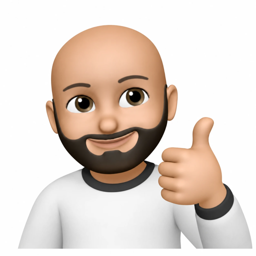
Vijay Kamat
Nineteen years designing enterprise software across healthcare, capital markets and industrial systems, and the last decade building the teams that do it.
He has hired, coached and promoted designers across four organisations and mentored over 100 designers through structured capability programmes. Every session is built from that same material: the frameworks, critique practice and research methods he uses at work every week.
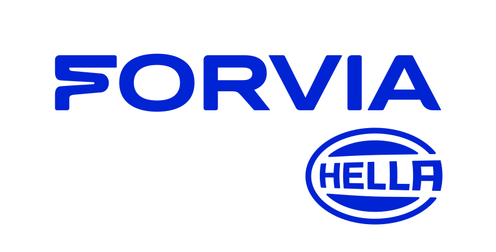
Straight from the room.
Every participant fills in the same feedback card before leaving. These are the real cards from a five-day cohort, unedited. Drag them around.
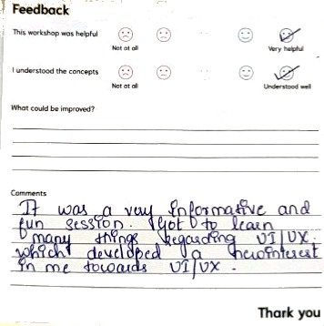
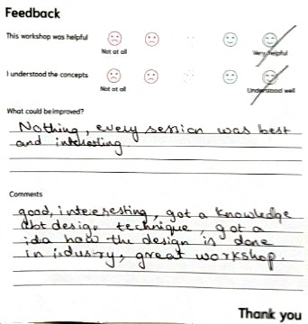
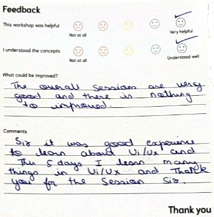
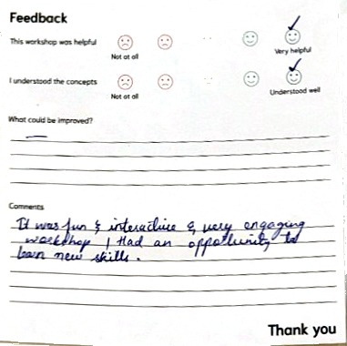
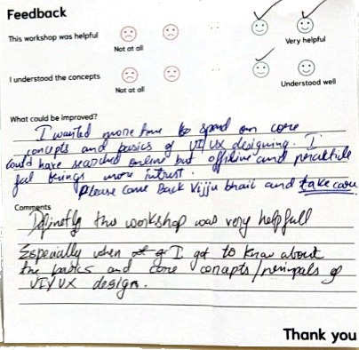
“It was an extraordinary workshop. We enjoyed a lot and didn't realise how the time flew by. I wish it was longer.”
Pradhan, workshop participant“Very engaging workshop. I loved the hands-on approach and building the app in real time.”
Sakshi, workshop participant“The workshop brought out a new avenue for me and I find this field fascinating now.”
Suraj, workshop participant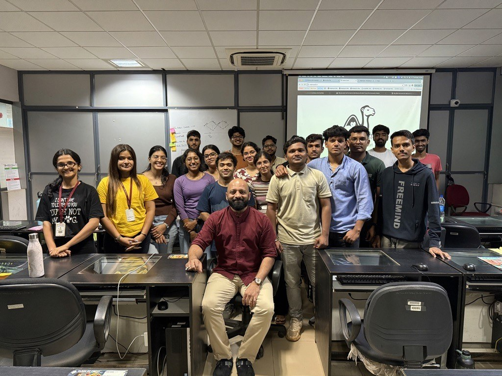
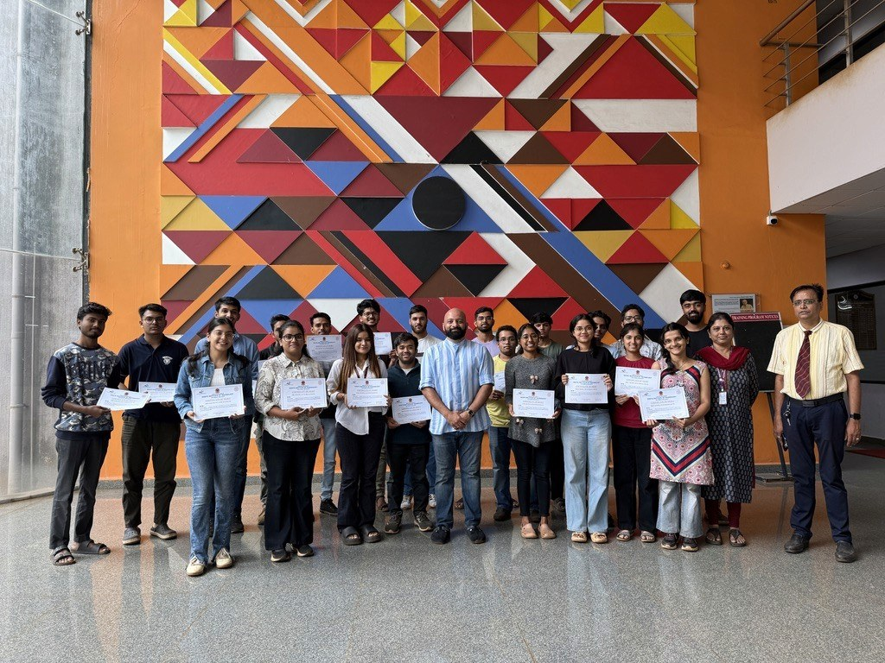
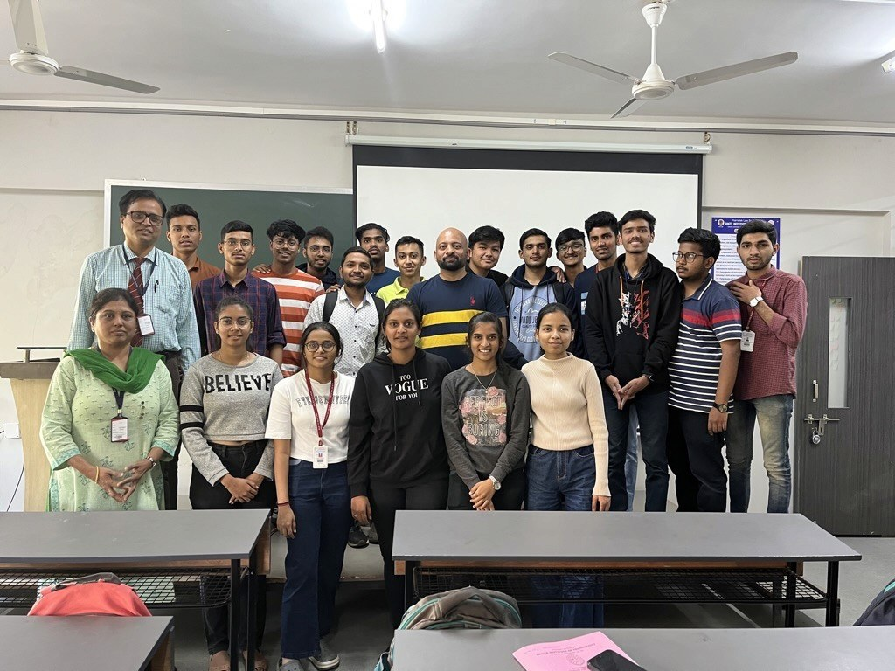
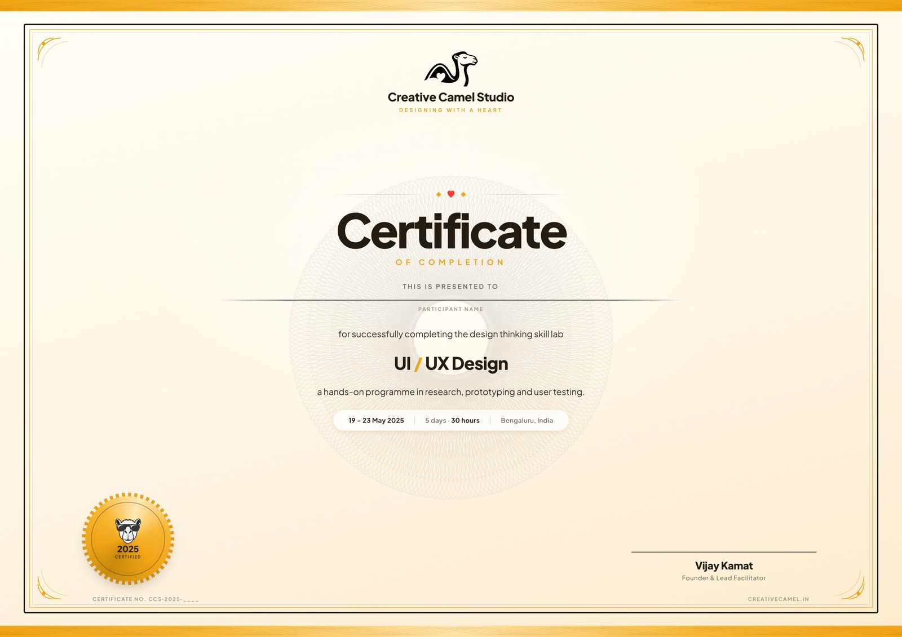
A certificate worth earning
- Assessed against real output, not attendance
- Programme, hours and dates stated on the face
- Reference-numbered and verifiable for CVs and LinkedIn
Three steps from here to a room full of people solving real problems.
A 20-minute call
Tell us about the group, the time you have and what you want them to walk away with.
A tailored programme
Within a week you receive the agenda, outcomes and investment, designed around your group.
Delivery & certificates
We run the sessions, assess the work and share a short outcomes report afterwards.